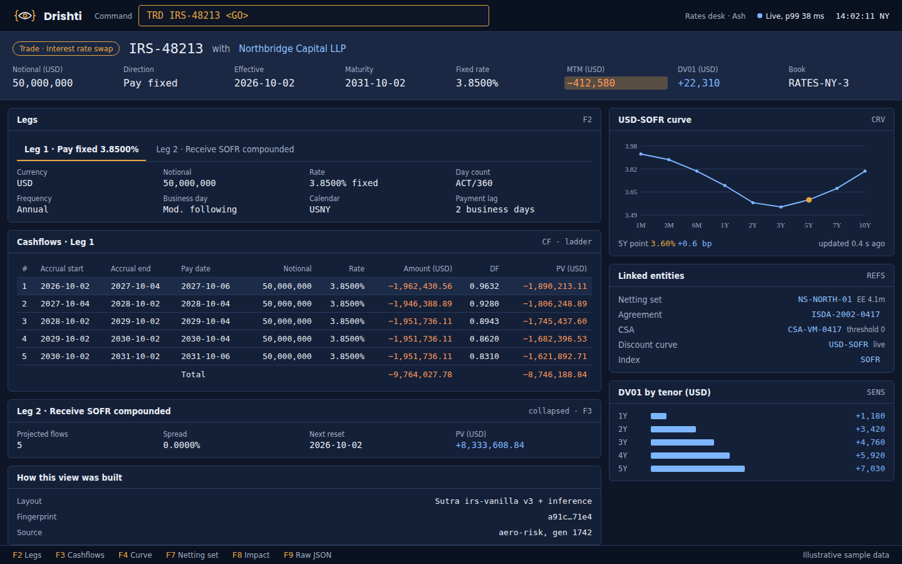
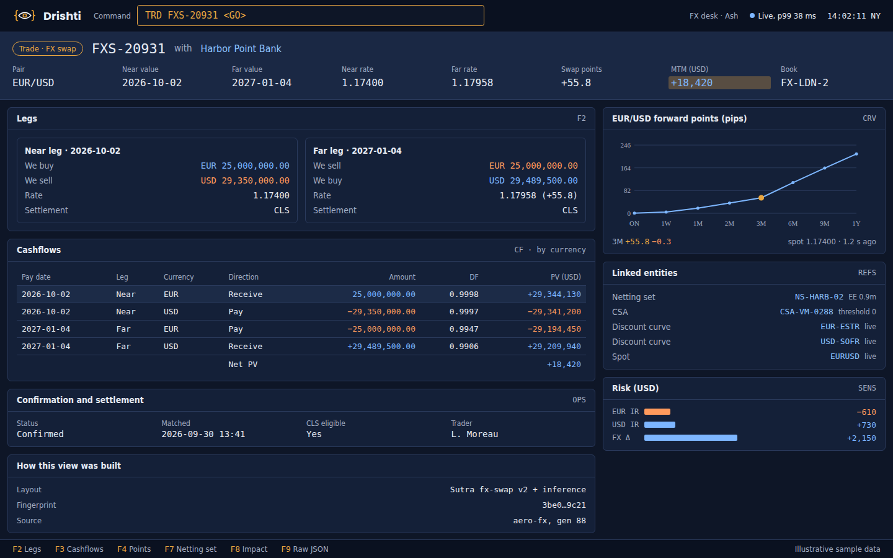
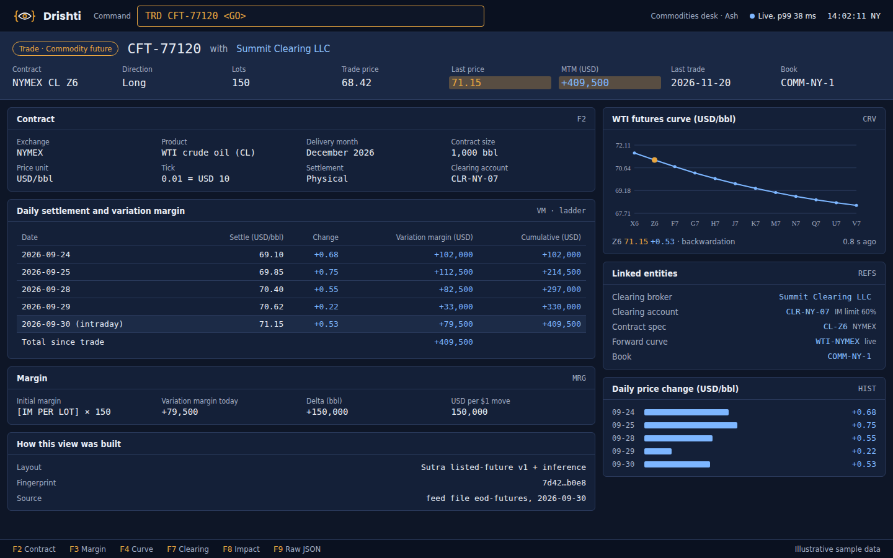
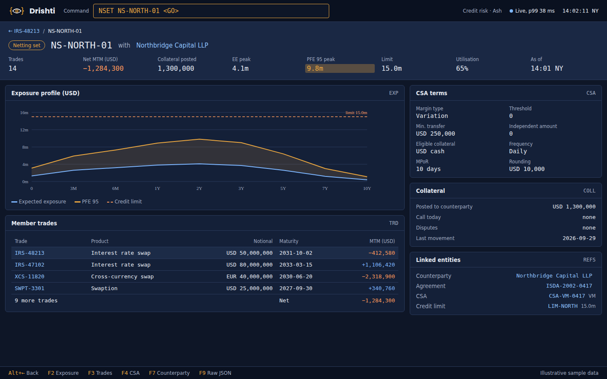

See what your data hasn't told you yet.
Any data. Any domain. One grammar.
Drishti turns any record from any system — a swap, an FX trade, a futures position, a netting set — into a dense, linked, ticking view. No hand-built screens: a layout grammar called Sutra describes the view, and inference fills whatever it leaves out.
One kernel. Modules plug in.
is one kernel with plugged in:
. Each module is a room with its own screens; an empty socket takes another
.dmod. Your product, your way.
the mark, down to icon size
A screen is a paragraph, not a project.
Rachana (रचना, composition) is Drishti's screen grammar. Each product family gets a Sutra: a short, versioned YAML file written in it. It names the key figures, the panels, the
bindings and the function keys. It holds no code and no pixels. Wherever it says
infer: true, the inference engine reads the shape of the data and completes the layout.
If a product has no Sutra at all, it still renders on day one: inference turns arrays into tables, term structures into curves and identifiers into links.
sutra: irs-vanilla version: 3 match: { kind: trade, where: "$.PRODUCT_TYPE == 'IRS_FIXFLOAT'" } strip: - { label: Notional (USD), bind: $.notional, fmt: amount0 } - { label: MTM (USD), bind: $.mtm, emphasis: true } panels: - { id: legs, key: F2, kind: tabs, infer: true } - { id: flows, key: F3, kind: table, rows: $.cashflows } - { id: curve, key: F4, kind: line, source: link($.curve) } - { id: refs, kind: links } # every id becomes a door
Seven stages. Every view. Every tick.
Every request goes through the same stages. Layouts are cached by the shape of the data, so the cost of inference is paid once per shape; warm requests only bind values.
Built for people who read numbers for a living.
Keyboard first
TRD IRS-48213 <GO>. Function keys per view, Alt+← to go back, F9 for the raw JSON — always.
Linked
Every identifier opens another view: netting set, CSA, agreement, curve. A breadcrumb trail shows how you got there.
Live
Views tick over server-sent events. Only the changed cells repaint, and the top bar shows the measured p99 latency.
Any source, any industry
Plugins bring the data (caches, REST, JDBC, feed files); domain packs bring the vocabulary: seven packs ship (core, market data, trading, counterparty and market risk, world economy, news and markets), and yours is configuration only.
Provenance
Each view says how it was built: Sutra and version, data fingerprint, source and generation.
Inference
Scored, explainable rules turn data shapes into panels. Studio lets you promote an inferred panel into the Sutra.
Different data. The same eye.




See your data the way it wants to be seen.
Drishti (दृष्टि) means sight.